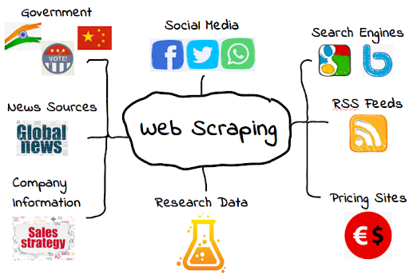

C'est plutôt sympa
Je découvre que des fichiers HTML et CSS fonctionnent ensemble
Je dois indiquer un lien sur le script HTML, vers le CSS, pour indiquer d'éventuels liens et le style de la page.
Dernière étape pour déployer via Github
Une fois ces premières notions vues (notamment le balisage), nous pourrons commencer à aborder le web scraping !
 Page wikipedia sur le web scraping